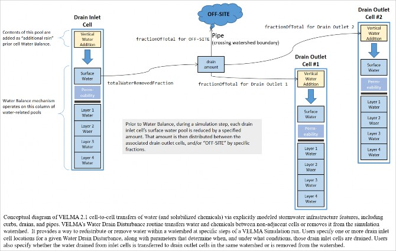
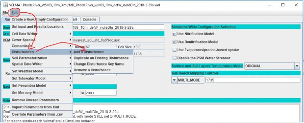
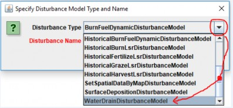
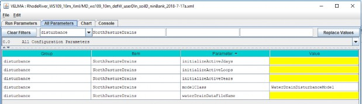
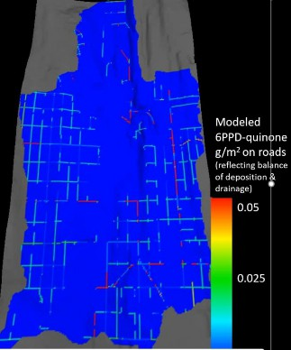
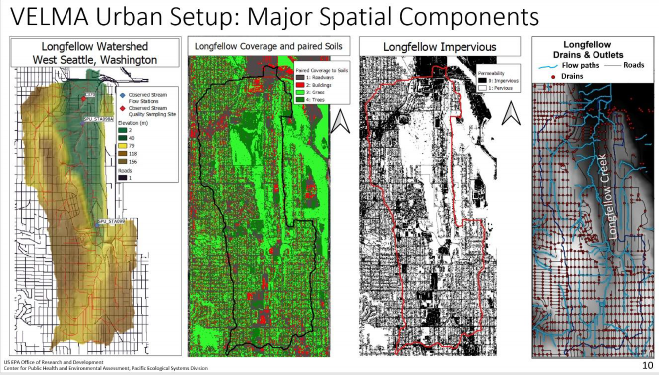
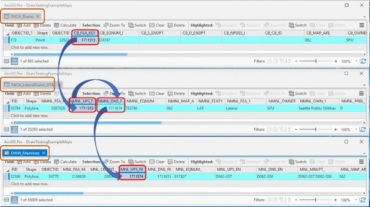
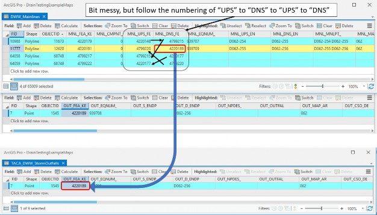
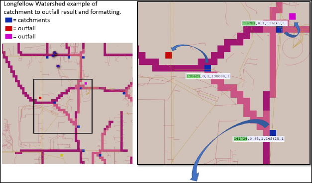

+
A.4 | Adding Stormwater Drains for Urban & Mixed-Use Watershed Applications
Overview (Tutorial A.4 - Adding Stormwater Drains for Urban Contaminant Fate & Transport Applications)
Stormwater infrastructure - especially storm drains (catchments) and pipes when coupled with impervious surfaces - has a major impact on urban runoff and needs to be explicitly modeled to accurately predict contaminant fate and transport in urban watersheds.
This tutorial describes how to use VELMA's Water Drain Disturbance routine to set up stormwater drains and pipes for simulating transfers water between non-adjacent grid cells, or remove it from the simulation watershed.
The Water Drain Disturbance provides a way to redistribute or remove water within a watershed at specific steps of a VELMA Simulation run.
As of September 2021, the Water Drain Disturbance routine has been shown to accurately represent stormwater runoff of surface water and entrained dissolved contaminants via stormwater drains and pipes, via the water drain disturbance feature in VELMA 2.1 (McKane et al. 2021).
General Procedure for Implementing Water Drain Disturbance
The Water Drain Disturbance transfers water between non-adjacent cells or removes it from the simulation watershed. It provides a way to redistribute or remove water within a watershed at specific steps of a VELMA Simulation run. Examples of use would be to explicitly simulate transfer of water through stormwater systems, detection ponds, or culverts.
Users specify one or more drain inlet cell locations for a given Water Drain Disturbance, along with parameters that determine when, and under what conditions, those drain inlet cells are to transfer water from the Surface Water spatial pool.
Users also specify whether the water drained from inlet cells is transferred to drain outlet cells in the same watershed, or is transferred beyond the watershed boundary, which will result in water transferred out to not be represented in the simulations hydrograph and hydrology statistics.
Water Drain Disturbances Have Several Significant Usage Restrictions
When configuring a simulation with Water Drain Disturbances, keep the following in mind:
- Water Drain Disturbances use within a VELMA's Parallel Mode is not recommended, though technically feasible. To be executed correctly, all water transfers must occur within the same sub-reach, or all water leaving a sub-reach should do so. Any water transfers that do occur across VELMA Parallel sub-reaches will be lost to the simulation due to how VELMA Parallel tracks water flowing from independent to dependent sub-reaches. See "HowTo VELMA Parallel Mode.docx" for VELMA Parallel mode details.
- VELMA simulation configurations that employ Water Drain Disturbances must set their Sub-Reach mapping to SOLO_MODE, and this means that runoff data is not available except for the watershed's primary outlet.
- Water Drain Disturbances affect not only water amounts, but also transports nutrients and contaminants that are present at the corresponding surface pool (nutrients and contaminants that are within the layers are not impacted by this disturbance routine). Nutrient and contaminant quantities are transferred based on the percentage of the water volume transferred. Example: if 100% of surface water is transferred, 100% of contaminants at that same explicit cell surface location is also transferred. If 50% of surface water is transferred, 50% of contaminants at that same explicit cell surface location is transferred. The Water Drain Disturbance CSV file and optional impervious ASC map can both impact the water volume that is transferred.
Overview: Configuration Steps for a Water Drain Disturbance
Adding one or more Water Drain Disturbances to a VELMA simulation configuration via JVelma involves the following two steps:
- Create the .CSV drain configuration data file designating the surface water transfer locations and percentages of water or amount of water in millimeters (when transfers are explicit by amount only water available is transferred; never more than any water present at any timestep).
- For applications requiring the explicit representation of water movement from catchment (inlet) to outflow (outfall) the use of Geographic Information Systems (GIS) data is leveraged to create CSV files for:
- urban applications representing stormwater systems.
- green infrastructure or agricultural applications representing land use change.
- Culverts installed under roadway systems (urban and forestry).
- For applications requiring the explicit representation of water movement from catchment (inlet) to outflow (outfall) the use of Geographic Information Systems (GIS) data is leveraged to create CSV files for:
- Add a new Water Drain Disturbance parameterization group to the simulation configuration, employing the drain configuration data file.
Creating a Drain Configuration Data File
A Water Drain Disturbance must know:
- the catchment or inlet water drainage cell locations (formatted as 1D i- index form),
- the outlet or outfall cell locations where drained water emerges (formatted as 1D i-index form) when the water should be transferred to a location within the delineation; otherwise if the water should transfer out of delineation the i-index can be blank or any valid i-index outside the delineation, and
- when water is available how much water is transferred per timestep. See Formatting Notes below.
Water amounts transferred are controllable for both the fraction of inlet water to drain, and what fraction of the drained water to transfer to each connected outlet (when multiple outlets are present). The drain configuration data file specifies all this information in the form of a .CSV table. Each row of the drain configuration data file represents one inlet, the fraction of water inlet water to drain, and zero or more outlets, and the fraction of the drained water each receives. See Formatting Notes below.
For example, the water drain data below, configures a network of 2 inlets. Each inlet drains water to 2 separate outlets, and one of the "outlets" is "OFF-SITE" - meaning the water is removed from the simulation watershed when drainage occurs.
| Inlet | inFraction | #ofOutlets | Outlet | outFraction | Outlet | outFraction |
|---|---|---|---|---|---|---|
| 227 | 0.90 | 2 | 343 | 0.50 | 323 | 0.50 |
| 348 | 0.75 | 2 | 0.75 | - | 390 | 0.25 |
Formatting Notes:
- The #ofOutlets field value must match number of Outlet,outFraction pairs of fields that follow it.
- The inFraction, and all outFraction values must be in the range [0.0, 1.0]
- The outFraction values for a given inlet must collectively sum to 1.
- Specify the OFF-SITE location as an empty Outlet location field paired with an outFraction value.
- The OFF-SITE location may be specified for multiple inlets, but not multiple times for a single inlet.
- The example data above has header row, but a header row is not required.
The example configuration above results in the network of drains illustrated below:

The following table summarizes the fields (left to right) for one row of a drain configuration data .CSV file:
| Field | Meaning |
|---|---|
| 0 | The linear index of an inlet cell location |
| 1 | The fraction of this inlet's water to drain to outlets, range [0.0, 1.0] |
| 2 | The number of outlets associated with this inlet |
| 3 | The linear index of the first outlet cell location associated with this inlet. Setting the value to blank (but remember the comma!) indicates OFF-SITE drainage. |
| 4 | The fraction of the water drained from the inlet transferred to the first outlet cell's Vertical Water Addition pool, range [0.0, 1.0] |
| < . . . > | <repeat fields 3 and 4 for each additional drain outlet associated with this inlet> |
| n | The linear index of the nth outlet's cell location |
| n+1 | The fraction of the water drained from the inlet transferred to the nth outlet. |
Adding a Water Drain Disturbance Parameterization to a VELMA Configuration
Start with an appropriate VELMA simulation configuration .xml file.
Load the file into JVelma and confirm that the enableReachMapping parameter's value is SOLO_MODE. Next, click the Edit -> Disturbances -> "Add a Disturbance" menu item, as shown below:
In the "Specify Disturbance Model Type and Name" pop-up dialog that opens, click the drop-down selector, scroll down, and click-select the "WaterDrainDisturbanceModel" type:
After selecting WaterDrainDisturbanceModel as the type, enter a unique name for the disturbance in the "Disturbance Name" field of the dialog. Finally, click the OK button, which adds a new parameterization group to the simulation configuration and changes JVelma's display to the "All Parameters" tab, with the item-level filter set to only display the parameters for the newly added Water Drain Disturbance.
Parameters That Must Be Left Alone
The modelClass parameter is set by JVelma when you add the Surface Deposition Disturbance to the simulation configuration. Do Not Change this parameter's value. Ever.
Parameterizing When Drainage Occurs
Specify values for the initializeActiveLoops, initializeActiveYears, and initializeActiveJdays, parameters to determine the loops, years, and Julian days of the simulation when drainage will occur. These parameters accept single values, a comma-separated set of values, a hyphen-separated value range, or a combination of values and ranges.
For example, to schedule drainage during the 3rd loop of a simulation, in years 2000 and 2002, for the first month of each active year:
initializeActiveLoops = 3
initializeActiveYears = 2000, 2002
initializeActiveJdays = 1-31
Parameterizing Where and How Much Drainage Occurs
All the details required for drainage inlet, outlet, and quantity are contained within the drain configuration data
.CSV file (see the "Creating a Drain Configuration Data File" section above). Set the waterDrainDataFilename parameter to point to that file.
You may specify the file by a fully-qualified path and name, a partial path and name, or only the name of the file. When the waterDrainDataFilename parameter's value isn't fully-qualified, JVelma assumes the file's location is relative to the input location specified for the simulation run by the inputDataLocationRootName and inputDataLocationFileName (startups group) parameters.
Results Output for Water Drainage
The GlobalStateLog.txt file records an INFO statement for each WaterDrainDisturbance occurrence during a simulation run. No additional map files or DailyResults.csv columns are automatically generated. A simple visualization of WaterDrainDisturbance events can be viewed using the "VelmaDrainDisturbanceVisualizer.py" code. This code requires minor, yet direct, changes to the Python code.
The logged WaterDrainDisturbance events can also be processed into ASCII maps using the "curb_n_drainToAsciiMapConvertor.py" code, then provided to the VISTAS 3D visualization tool.
Above is a frame from a VISTAS video of 6PPD-quinone being deposited and routed along road surfaces due to the Water Drain Disturbance routing water along road surfaces to stormwater catchments. Details on this setup and generally how to a Water Drain Disturbance below.
Example of explicit Stormwater System modeling using the Water Drain Disturbance
Part of VELMA additions leading to version 2.1 allowed for the spatially explicit replicate municipal high- resolution spatial data describing stormwater infrastructure (roads, curbs, drains, pipe inlet and outlets) for densely developed urban watershed.
The Longfellow watershed is located within City of Seattle Washington's West Seattle area. Most of this watershed is heavily urbanized with some lesser areas consisting of more natural areas such as the golf course and riparian corridor along the Longfellow Creek. But these more natural areas are overshadowed by this watershed's end to end coverage of impervious roadways and parking lots paired with a modern stormwater system. The VELMA Urban Setup figure below represents the major components that allow VELMA to simulate urban landscapes. This HowTo document focuses on the translation of GIS stormwater data seen in the far-right map panel to the CSV file format described above.
VELMA set up for explicitly modeling actual stormwater infrastructure in Longfellow Creek watershed, Seattle, WA (McKane et al. 2021).
The City of Seattle has publicly available GIS data representing their stormwater systems catchments, lateral pipes, mainline pipes, and outfall locations. These four stormwater components are separated regarding the GIS spatial data, yet all linked within the shapefile attributes tables using variable keys. Catchments contain a unique key linking to a lateral pipe or mainline pipe, lateral pipes and mainline pipes all have an uphill key linking to a downhill key linking to the next pipe piece, and all outfall locations have a key linking to final mainline pipe of that section of the network.
The Java based programming tool called "VelmaEndPtFromDrainWalker.java" was developed to "walk" the City of Seattle's stormwater GIS data when provided the above key information as three data tables. The below image represents the tabular walking from key to key among one catchment to one lateral pipe to a mainline pipe. Most lateral pipes are the direct connection between the catchment and mainline pipes. There are cases where more than one lateral pipe was installed, and in those cases multiple lateral pipes are "walked".
The below image represents the same tabular walking pattern among a series of mainline pipes to the final outfall point location.
The output from the "VelmaEndPtFromDrainWalker.java" tool matches the format described above under section titled "Creating a Drain Configuration DataFile". Below is a visual example of highlighting both the location of catchments to outfalls with the csv file format
Note: though both the above tabular walking and below visual are both within Longfellow watershed, the above stormwater features in the tabular data are not the locations represented below.
Curbed Streets
Street systems within an urban landscape can include curbs or drainage ditches that route water along roadways to curb stormwater drain inlets or catchment basins. This engineered system entirely removes the water from the original natural flow pathways and instead produces the water either:
unnaturally elsewhere within the watershed delineation (e.g., stream, detention pond, stormwater overflow vaults) shifting the hydrograph peak and timing, or
- produces the water outside of watershed delineation which completely removes the water from the originating watershed's hydrograph.
In either situation, within an ecohydrology model the water must be properly routed within the constraints of the modeling framework. Once the "VelmaEndPtFromDrainWalker.java" tool solves all catchments to outfalls, each catchment is processed in relation to the road network that is provided as a ASCII map matching the VELMA simulations cell resolution and spatial extent. If a catchment cell is on or directly neighbors a road cell the road network is walked for all cells road cells uphill until reaching another catchment cell or the top of the hill. The result is a series of inlet-to-outlet, inlet-to-outlet, etcetera Water Drain Disturbance events that in VELMA route water among a roadway to stormwater catchment inlets. The formatting of these "curb" Water Drain Disturbance events is identical to the stormwater catchment to outfall described in under section titled "Creating a Drain Configuration Data File". These curb disturbances and stormwater system disturbances are all output in a single CSV by the “VelmaEndPtFromDrainWalker.java” tool.
The below example highlights the four possible cell types the "VelmaEndPtFromDrainWalker.java" tool would determine.
- Stormwater Inlets (blue): driven by GIS stormwater data and in proximity of road network or impervious parking lots.
- Isolated Stormwater Inlets (green): driven by GIS stormwater data but were not in vicinity of road network or impervious parking lots.
- Curbed Streets (aqua): these were locations that were road cells uphill of a stormwater catchment or contained a direct linkage in series to a catchment.
- Non-curbed (black): these were road cells not determined to have a water routing path directly to a catchment cell. Note: an optional impervious ASCII map could represent water transfer along these cells, but such water would not be routed to a stormwater catchment cell.
References
McKane, R.B., J.J. Halama, V. Phan, A. Brookes, K. Djang, E. Kolodziej, K. Peter. 2021. Model analysis and visualization of 6PPD-quinone fate and transport in Longfellow Creek watershed, Seattle, USA. 2021 International Emerging Contaminants (EMCON) Conference (virtual). U.S. Environmental Protection Agency clearance tracking number ORD-042888.
PowerPoint describing this work: https://github.com/USEPA/VELMA_Public/blob/master/McKane%20et%20al%20EMCON_2021%20Presentation_9-13-21_v2%20with%20Notes.pptx